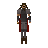

Khazard commander

| Config name | khazard_commander |
| NPC id | 478 |
| Combat level | 48 |
| Hitpoints | 22 |
| Attack / Strength / Defence | 50 / 45 / 50 |
| Respawn | 300 ticks |
| Options | Attack |
| Aggression | cowardly |
| Wander range | 2 tiles from spawn |
| Max range | 4 tiles from spawn |
| Defined in | scripts/quests/quest_tree/configs/gnome_battlefield.npc |
Khazard commander
It's one of General Khazard's commanders.
Show all 2 spawns on the world map → Open in knowledge graph →
Drops
No drops recorded.
Locations
| Area | Coordinates | Level | Count | Map |
|---|---|---|---|---|
| Battlefield | 2503, 3255 | 1 | 1 | view |
| Battlefield | 2509, 3254 | 0 | 1 | view |
Quests
Referenced in scripts
scripts/quests/quest_tree/scripts/quest_tree.rs2